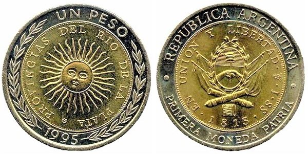

Práctica - Unidad 0
Repaso de probabilidad
El objetivo de los ejercicios de esta unidad es refrescar y consolidar los conocimientos relacionados con el cálculo de probabilidades y la manipulación de distribuciones de probabilidad.
¡Argentina campeón!
De las siguientes expresiones cual(es) se corresponde(n) con el enunciado “la probabilidad de que Argentina gane la copa del mundo el 18 de Diciembre de 2022”?
- \(P(\text{18 de Diciembre de 2022} | \text{Argentina campeón})\).
- \(P(\text{Argentina campeón})\).
- \(P(\text{Argentina campeón}, \text{18 de Diciembre de 2022}) / P(\text{18 de Diciembre de 2022})\).
- \(P(\text{Argentina campeón} | \text{Diciembre})\).
- \(P(\text{Argentina campeón} | \text{18 de Diciembre de 2022})\).
El festejo de los campeones del mundo De formulas a español
Enuncie con palabras cada una de las expresiones del punto anterior.
Probabilidades condicionales
Según la definición de probabilidad condicional
- ¿Cuál es el valor de \(P(A | A)\)?
- ¿Cuál es la probabilidad de \(P(A, B)\)?
- ¿Cuál es la probabilidad de \(P(A, B)\) en el caso que \(A\) y \(B\) sean independientes?
- ¿Cuándo se cumple que \(P(A | B) = P(A)\)?
- ¿Es posible que \(P(A | B) > P(A)\)? ¿Cuándo?
- ¿Es posible que \(P(A | B) < P(A)\)? ¿Cuándo?
Amigarse con la función de densidad (I)
Suponga \(X \sim \text{Uniforme}(a, b)\). Su soporte es \(\mathcal{S} = [a, b]\) y su función de densidad de probabilidad es \(p(x) = 1 / (b - a)\) para todo \(x \in \mathcal{S}\).
- Pruebe que \(p(x)\) es una función de densidad de probabilidad válida.
- Encuentre la media y la varianza de \(X\).
Amigarse con la función de densidad (II)
Sea \(X\) una variable aleatoria con soporte \(X \in \mathcal{S} = [1, \infty)\). Encuentre la constante \(c\), en función de \(\theta\), que haga que \(p(x) = c \exp(-x / \theta)\) sea una función de densidad de probabilidad válida.
En búsqueda de la distribución deseada
Según personas expertas en un problema determinado, se indica que el valor de un parámetro debe ser positivo y su distribución a priori debe tener media igual a 5 y varianza igual a 3. Encuentre una distribución que satisfaga estas condiciones.
Distribución conjunta, marginal y condicional
Sean \(X_1\) y \(X_2\) dos variables aleatorias con función de probabilidad conjunta dada por la siguiente tabla:
\(X_1\) / \(X_2\) \(X_2=0\) \(X_2=1\) \(X_1=0\) \(0.15\) \(0.15\) \(X_1=1\) \(0.15\) \(0.20\) \(X_2=2\) \(0.15\) \(0.20\) donde la celda de la primer fila y primer columna se lee \(P(X_1=0, X_2=0)=0.15\)
- Obtenga la distribución marginal de \(X_1\).
- Obtenga la distribución marginal de \(X_2\).
- Obtenga la distribución condicional de \(X_1\) dado \(X_2\).
- Obtenga la distribución condicional de \(X_2\) dado \(X_1\).
Distribuciones marginal y condicional de una normal
Sean \(X_1\) y \(X_2\) tales que \((X_1, X_2)\) siguen una distribución normal bivariada con \(\mathbb{E}(X_1) = \mathbb{E}(X_1)\) = 0, \(\text{Var}(X_1) = \text{Var}(X_2 = 1)\) y \(\text{cor}(X_1, X_2) = \rho\)
- Encuentre la distribución marginal de \(X_1\).
- Encuentre la distribución condicional de \(X_1\) dado \(X_2\).
De bolas, pesos y distribuciones de probabilidad
Suponga una urna \(S\) contiene un 40% de bolas verdes y un 60% de bolas rojas, y otra urna \(E\) contiene un 60% de bolas verdes y un 40% de bolas rojas. Una persona arroja una moneda de un peso argentino y selecciona una bola de una de las dos urnas dependiendo de si la moneda en sol o escudo. Si la moneda cae en sol, saca una bola de la urna \(S\) y si la moneda cae en escudo, saca una bola de la urna \(E\).
Considere las siguientes variables aleatorias:
\[ \begin{aligned} X &= \begin{cases} 1 & \text{Si la moneda cae en sol} \\ 0 & \text{Si la moneda cae en escudo} \end{cases} \\ \\ Y &= \begin{cases} 1 & \text{Si la bola es verde} \\ 0 & \text{Si la bola es roja} \end{cases} \end{aligned} \]
- Encuentre la distribución conjunta de \(X\) e \(Y\) en una tabla.
- Encuentre \(\mathbb{E}(Y)\). ¿Cuál es la probabilidad de que la bola sea verde?
- Encuentre \(\text{Var}(Y | X = 0)\), \(\text{Var}(Y | X = 1)\) Y \(\text{Var}(Y)\). Considerando a la varianza como una medida de incertidumbre, explique de manera intuitiva por que algunas variancias son mas grandes que otras.
- Suponga que observa que la bola es verde. ¿Cuál es la probabilidad de que la moneda haya caido en escudo?

Moneda de un peso argentino acuñada en 1995 Luces de giro
Las luces de giro en los automóviles se utilizan para indicar que se va a realizar alguna acción determinada. La acción depende del escenario donde se conduzca (urbano, ruta, rotonda, etc.) y la luz que se encienda (izquierda o derecha). En el uso urbano, se debe colocar la luz de giro correspondiente para indicar que se va a girar en un sentido determinado. Sin embargo, esto no siempre se realiza. Muchas veces sucede que un vehículo no muestra luz de giro, y sin embargo gira. Aunque menos frecuente, también se da que el vehículo coloca la luz de giro, pero no gira. La probabilidad de girar dado que se coloca la luz de giro es 0.87 y la probabilidad de girar dado que no se coloca la luz de giro es 0.21. Si observa que un vehículo coloca la luz de giro, ¿cuál es la probabilidad de que efectivamente doble?
Problema del cumpleaños
Hay \(k\) personas en una sala. Suponga que el cumpleaños de cada persona tiene la misma probabilidad de ocurrir en cualquiera de los 365 días del año (se excluye el 29 de Febrero) y que los cumpleaños de las personas son independientes entre si. ¿Cuál es la probabilidad de que al menos un par de personas en el grupo cumplan los años el mismo día?
Foto de Adi Goldstein en Unsplash Problema de concordancia de de Montmort
Considere un mazo de \(n\) cartas bien mezcladas, etiquetadas con números del 1 a \(n\). Se seleccionan las cartas de a una y se la da vuelta, diciendo en voz alta el número de cartas dadas vueltas desde 1 a \(n\). Para ganar el juego tiene que coincidir el número que se dice en voz alta con el número de la carta que se está dando vuelta – por ejemplo, si la séptima carta dada vuelta contiene el número 7. ¿Cuál es la probabilidad de ganar? ¿Depende de \(n\)?
Problema de los dos sobres
Supongamos que te presentan dos sobres con dinero. Un sobre contiene el doble de dinero que el otro, pero a simple vista son indistinguibles. Se te pide que escojas uno de los sobres. Antes de abrirlo se te ofrece la posibilidad de cambiarlo por el otro. ¿Cambiarías el sobre? ¿Por qué?
Referencias
Hoff, Peter D. 2009. A First Course in Bayesian Statistical Methods. 1st edition. Springer.
Martin, Osvaldo A., Ravin Kumar, y Junpeng Lao. 2021. Bayesian Modeling and Computation in Python. 1st edition. Chapman; Hall/CRC.
Reich, Brian J., y Sujit K. Ghosh. 2019. Bayesian Statistical Methods. 1st edition. Chapman; Hall/CRC.